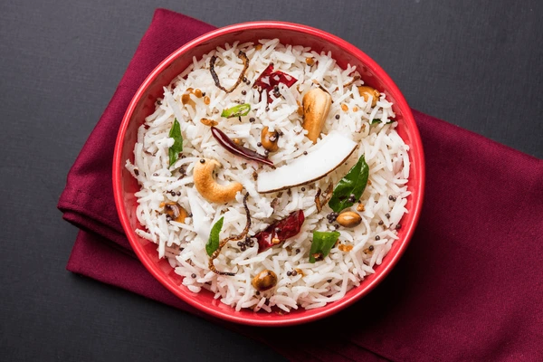

Ingredients
- Rinse 1 cup of basmati rice under cold water until the water runs clear. Soak the rice in water for about 15-20 minutes.
- Heat coconut oil in a pan over medium heat.
- Add mustard seeds and let them splutter.
- Add urad dal and fry until golden brown.
- Add cashew nuts and fry until they turn golden brown. Remove them from the pan and set aside.
- In the same pan, add grated coconut and sauté until it turns light golden brown and aromatic. Remove from heat and set aside.
Process
- In a separate pot, bring water to a boil. Drain the soaked rice and add it to the boiling water.
- Add salt to taste and cook the rice until it is about 70-80% cooked. Drain the rice and set aside.
- In the same pan used for sautéing the coconut, add the partially cooked rice and gently mix to combine with the coconut.
- Cover the pan with a lid and cook the rice on low heat for about 10-15 minutes, or until the rice is fully cooked and fluffy.
- Once cooked, fluff the rice with a fork and garnish with fried cashew nuts.
Serve:
- Serve the coconut rice hot as a side dish or as a main course with your favorite curry or chutney.